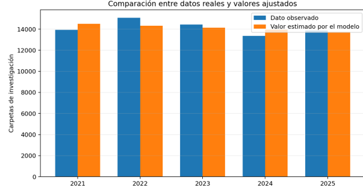
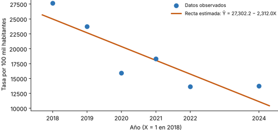

01
Nuestro propósito
Contribuir a la prevención de la violencia mediante herramientas digitales que permitan registrar y consultar información relacionada con las situaciones reportadas.
Una plataforma orientada al registro y seguimiento de situaciones de violencia, promoviendo la participación y la prevención comunitaria.
Centinela Digital es una plataforma orientada al registro y seguimiento de situaciones de violencia. Su propósito es facilitar la organización de la información y promover la prevención mediante la participación responsable de la comunidad.
Contribuir a la prevención de la violencia mediante herramientas digitales que permitan registrar y consultar información relacionada con las situaciones reportadas.
Facilitar el acceso a información, promover la participación comunitaria y apoyar la organización de los reportes para su seguimiento.
Fomentar una cultura de prevención, responsabilidad y colaboración para contribuir a la construcción de comunidades más seguras.
Promover la identificación y comunicación de situaciones que requieren atención.
Organizar la información de los reportes para facilitar su consulta y administración.
Consultar los avances y cambios de estado de los reportes registrados.
Identifica diferentes situaciones de violencia, conoce información relacionada y consulta las novedades de cada categoría.
Información y novedades relacionadas con la violencia dentro del entorno familiar.
Explorar información → 02Información y novedades sobre situaciones de violencia contra las mujeres.
Explorar información → 03Información relacionada con la protección y prevención de situaciones de abuso infantil.
Explorar información → 04Noticias e información sobre prevención y atención del acoso sexual.
Explorar información → 05Información relacionada con situaciones de hostigamiento en el entorno laboral.
Explorar información → 06Información y novedades sobre prevención del acoso en el entorno educativo.
Explorar información →Conocer la información relacionada con la violencia permite identificar patrones y comprender mejor las situaciones que afectan a nuestra comunidad.
En esta sección se presentan gráficas elaboradas a partir de la investigación realizada para Centinela Digital.
Esta gráfica presenta la información sobre los reportes registrados durante los periodos analizados en la investigación.

Permite observar cómo se distribuyen los registros entre las diferentes categorías de violencia consideradas.

Muestra los cambios observados en los registros a través del tiempo, de acuerdo con el periodo estudiado.

Los datos deben interpretarse considerando el periodo y la fuente indicados en cada gráfica.
La violencia puede afectar el bienestar emocional y físico de las personas. Conocer sus posibles consecuencias permite reconocer la importancia de la prevención, el apoyo y la atención oportuna.
Consulta la siguiente presentación para conocer más sobre la relación entre la violencia y el estrés, así como la importancia de cuidar nuestro bienestar.
Presentación informativa de Centinela Digital.
Conoce las herramientas de Centinela Digital y participa en la prevención comunitaria.
Acceder a la plataforma